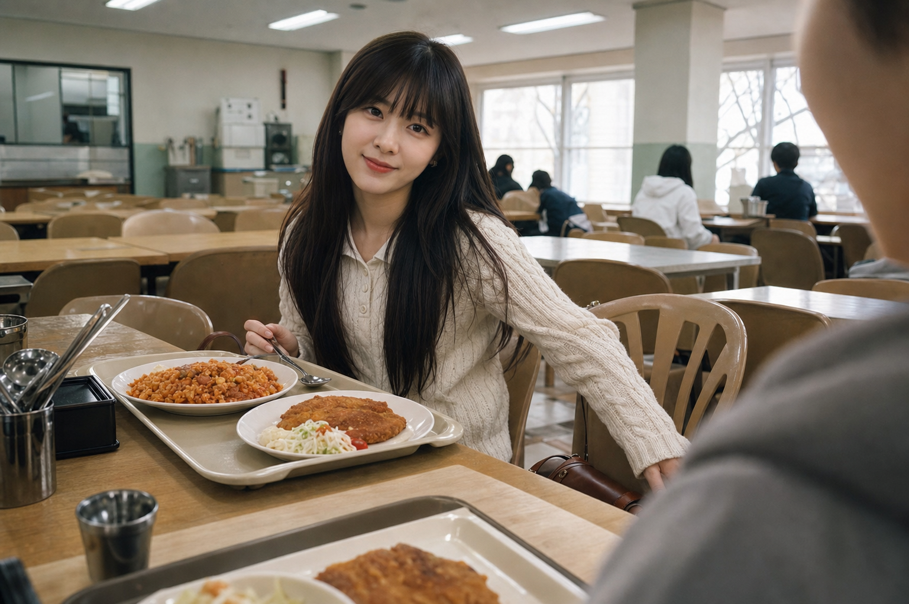

008. 점심값의 기준
월요일 캠퍼스는 금요일 PC방보다 더 어색했다.
김용식은 학생식당 줄에 서 있었다.
쟁반.
수저.
국 냄새.
천장에 매달린 형광등.
통장에 22억이 있어도 점심 줄은 서야 한다.
이상하게 공평한 세계였다.
[동기] "너 뭐 먹을 거야?"
[김용식] "제일 안 튀는 거."
[동기] "메뉴가 아니라 인생 태도 같은데."
[김용식] "돈가스."
[동기] "안 튀는 거라며."
실패했다.
돈가스는 언제나 존재감이 강하다.
김용식은 식권을 냈다. 2,800원. 손에 닿는 동전과 지폐가 묘하게 선명했다.
이 돈을 아끼는 척하는 게 맞나.
아니면 그냥 평범하게 쓰는 게 맞나.
큰돈을 숨기면 작은돈 앞에서 사람이 이상해진다.
그는 쟁반을 들고 빈자리를 찾았다.
그때 창가 쪽에서 손이 올라왔다.
[김초연] "어. 게임 안 놓치는 사람."
김용식은 멈췄다.
이름보다 별명이 먼저 생겼다.
관계는 가끔 이상한 순서로 자란다.
[김용식] "안녕하세요."
[김초연] "혼자예요?"
[김용식] "동기랑요."
옆 동기가 바로 고개를 숙였다.
[동기] "저는 투명 인간입니다."
[김용식] "너무 빨리 사라지는데."
[동기] "분위기 파악이 빠른 편."
동기는 빈자리 다른 쪽으로 미끄러졌다.
배신은 생각보다 조용했다.
김초연은 자기 맞은편 의자를 발끝으로 툭 밀었다.
[김초연] "앉아요."
[김용식] "괜찮아요?"
[김초연] "의자한테 물어본 거예요?"
[김용식] "김초연 씨한테요."
[김초연] "그럼 앉으라니까요."
김용식은 앉았다.
거리는 식탁 하나.
멀지도 가깝지도 않았다.
그 거리가 이상하게 선명했다.

김초연의 쟁반에는 김치볶음밥이 있었다. 계란프라이가 살짝 찢어져 있었다. 그녀는 숟가락으로 노른자 끝을 눌렀다.
[김초연] "정보통신학과는 오늘 뭐 해요?"
[김용식] "자기소개요."
[김초연] "싫겠다."
[김용식] "이미 싫습니다."
[김초연] "뭐라고 할 건데요?"
[김용식] "이름은 김용식이고, 조용히 지내고 싶습니다."
[김초연] "망했네요."
[김용식] "왜요."
[김초연] "조용히 지내고 싶은 사람은 보통 제일 안 조용해져요."
김용식은 젓가락을 멈췄다.
이 사람은 가끔 미래를 모르는 채로 정확한 말을 한다.
그게 문제다.
[김초연] "왜 또 그런 표정이에요?"
[김용식] "어떤 표정인데요?"
[김초연] "방금은 좀... 들킨 사람?"
정답.
초연의 통찰도 어머니와 다른 방향으로 빠르다.
이 집안도 아니고 왜 다 빠른가.
[김용식] "돈가스가 맛있어서요."
[김초연] "거짓말 못하네."
[김용식] "들켰네요."
[김초연] "근데 돈가스 한 입 줘요."
너무 자연스러웠다.
김용식은 접시를 봤다.
첫 번째 인생에서도 이랬다.
남의 접시에 거리낌 없이 숟가락을 들이밀고, 대신 자기 것도 아무렇지 않게 나눠주던 사람.
그때는 그게 귀찮을 때도 있었다.
지금은 이상하게 반가웠다.
[김용식] "교환이죠?"
[김초연] "뭐랑요?"
[김용식] "김치볶음밥."
[김초연] "내가 더 손해 같은데."
[김용식] "시장 가격은 그렇죠."
[김초연] "사람 짜증 나게 말 잘하네."
그녀는 그래도 숟가락을 내밀었다.
돈가스 한 조각이 넘어갔다.
김치볶음밥 한 숟가락이 돌아왔다.
아주 작은 거래.
22억보다 훨씬 가벼운 거래.
그런데 김용식은 그쪽이 더 조심스러웠다.
[김초연] "맛있죠?"
[김용식] "네."
[김초연] "진심?"
[김용식] "노른자가 좋네요."
[김초연] "구체적이라 인정."
식탁 아래에서 그녀의 운동화 끝이 가볍게 흔들렸다.
김용식은 그걸 보지 않은 척했다.
실패했다.
눈은 이미 봤다.
[김초연] "오늘 끝나고 PC방 가요?"
[김용식] "갈 수도 있고요."
[김초연] "애매하게 말하네."
[김용식] "확정하면 끌려가는 느낌이라서요."
[김초연] "끌려오면 되죠."
김용식은 물을 마셨다.
위험한 문장이다.
아직 농담이다.
그런데 사람은 농담으로 길을 낸다.
[김용식] "몇 시요?"
김초연이 웃었다.
이겼다는 얼굴.
[김초연] "여섯 시."
김용식은 고개를 끄덕였다.
평범한 점심 약속처럼 보였다.
실제로는 반복 접점이 생긴 순간이었다.
돈은 여전히 숨겨져 있었다.
하지만 오늘은 돈보다 더 숨기기 어려운 게 생겼다.
기대.